Linha 1 - Proteínas
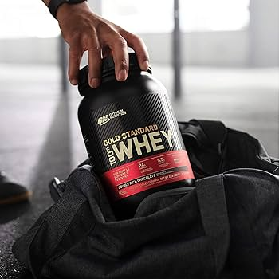
Whey Protein
Proteína de alta qualidade para ganho de massa muscular.
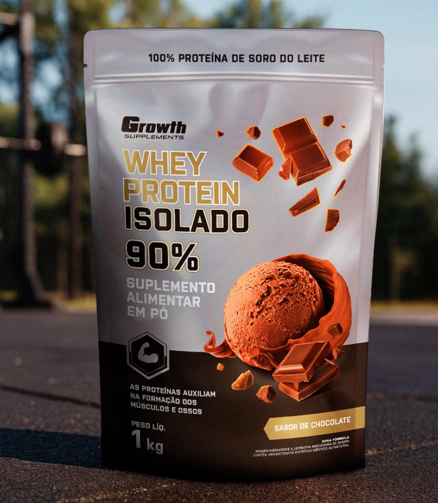
Whey Protein Isolado
O Whey Protein Isolado acaba sendo um dos suplementos preferidos entre atletas, praticantes de atividade física e até pessoas que não estão engajadas em rotinas de treinamento.
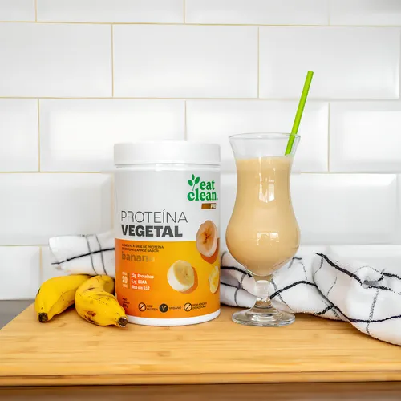
Proteína Vegetal
A proteína vegetal, obtida de fontes como leguminosas, sementes, oleaginosas e grãos, é um nutriente de alto valor biológico que atua na construção muscular, digestão e saciedade.
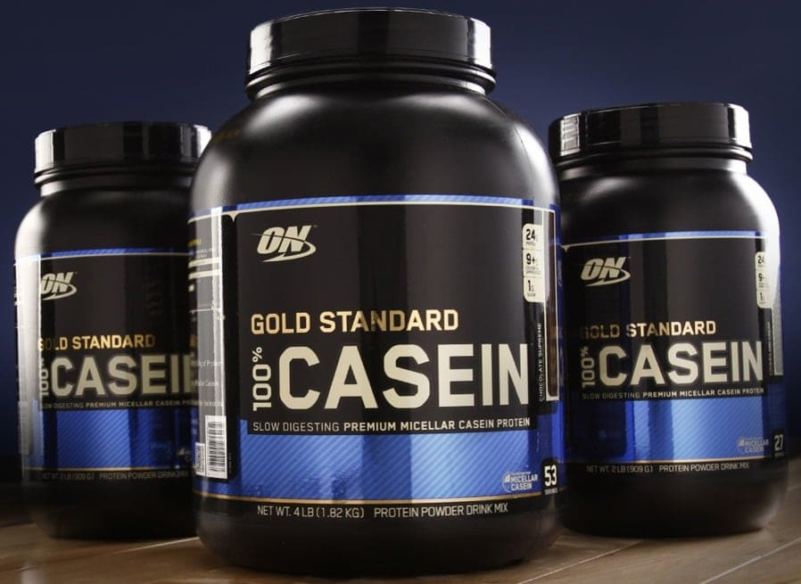
Caseína
É a principal proteína do leite de vaca (cerca de 80%), conhecida por ser de alto valor biológico e por ter uma digestão lenta e liberação gradual de aminoácidos no sangue.
Linha 2 - Energia e Performance
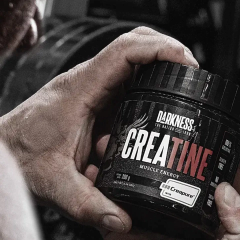
Creatina Monohidratada
Fornece mais energia durante o treino, além de ajudar no aumento do desempenho físico durante exercícios repetidos de curta duração e alta intensidade e contribuir na hipertrofia muscular.
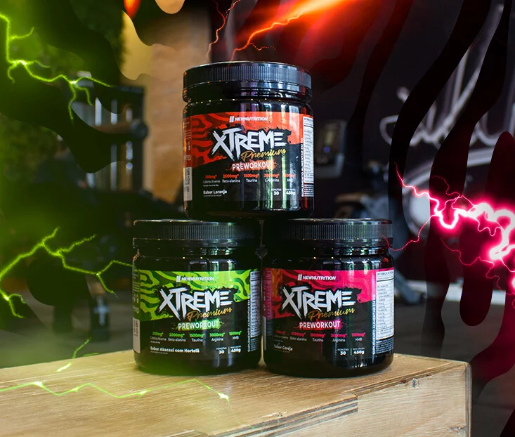
Pré-treino Extreme
É um suplemento desenvolvido para aumentar a energia, foco, vasodilatação e resistência muscular em treinos intensos.
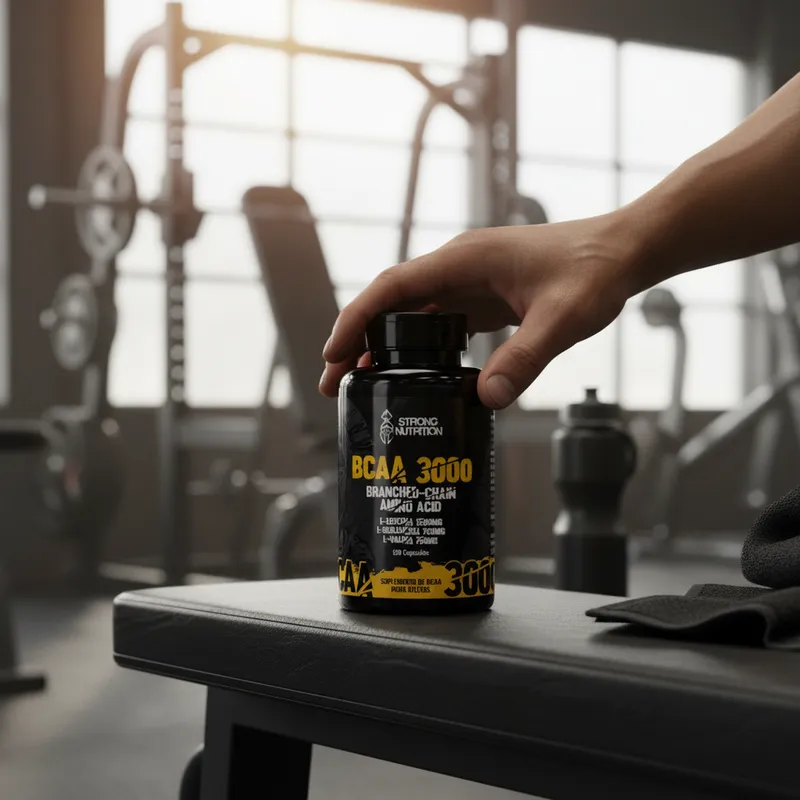
BCAA
BCAA — leucina, isoleucina e valina — são aminoácidos essenciais que o corpo não produz.
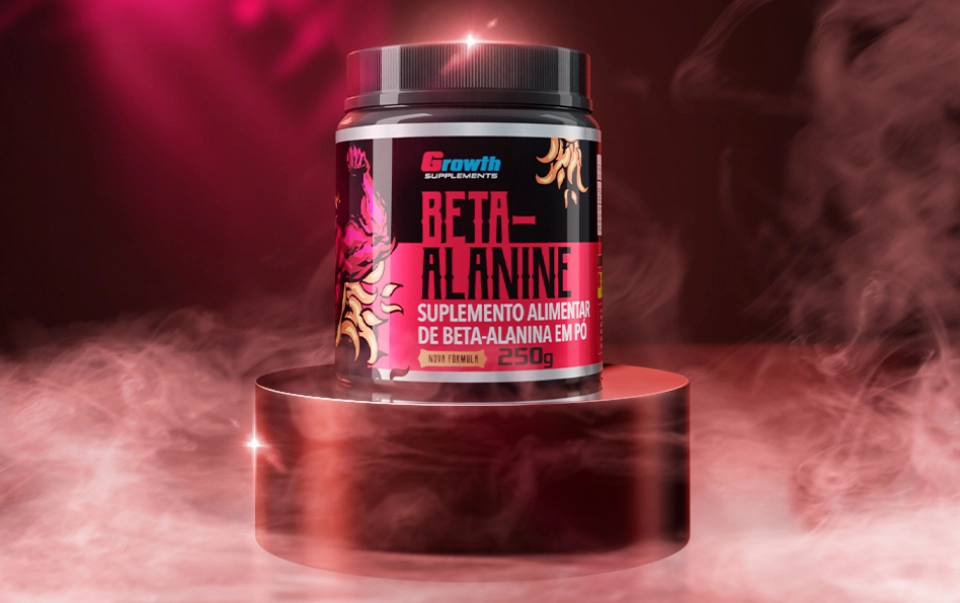
Beta-Alinina
É um aminoácido não essencial que aumenta os níveis de carnosina muscular, funcionando como um "tampão" que retarda a fadiga, reduz a queimação e aumenta a resistência em treinos intensos.
Linha 3 - Vitaminas e Saúde
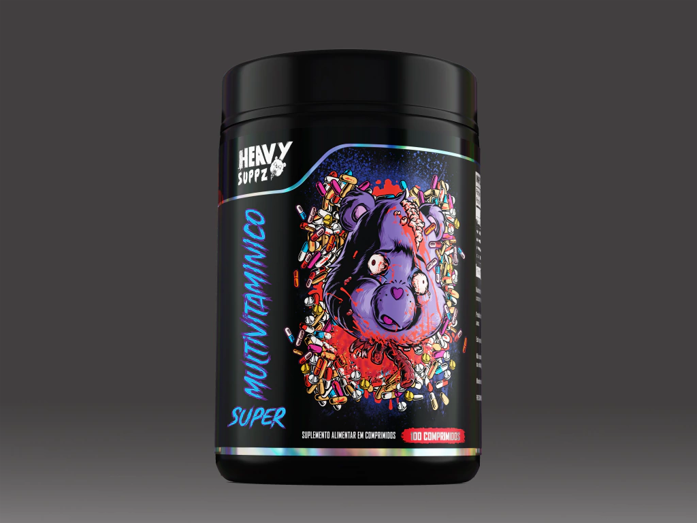
Multivitamínico
O Multivitamínico é um suplemento desenvolvido para quem busca mais qualidade de vida, disposição diária e fortalecimento do sistema imunológico
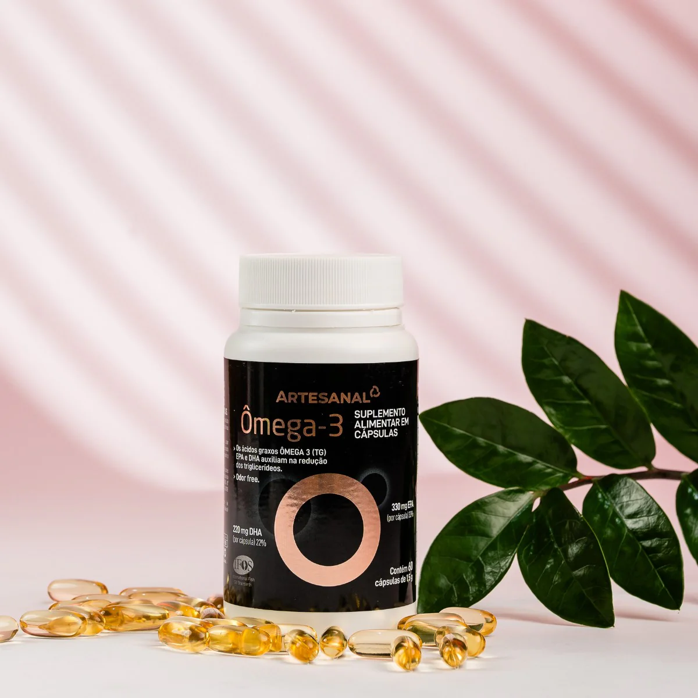
Omega 3
É uma gordura poli-insaturada essencial (EPA e DHA) que o corpo não produz, crucial para a saúde cardiovascular, cerebral e anti-inflamatória.
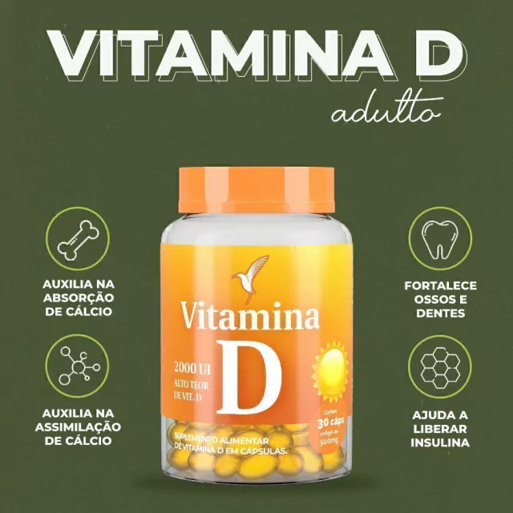
Vitamina D
É um pró-hormônio essencial para a saúde óssea, regulação do cálcio, fortalecimento do sistema imunológico e funcionamento neuromuscular.
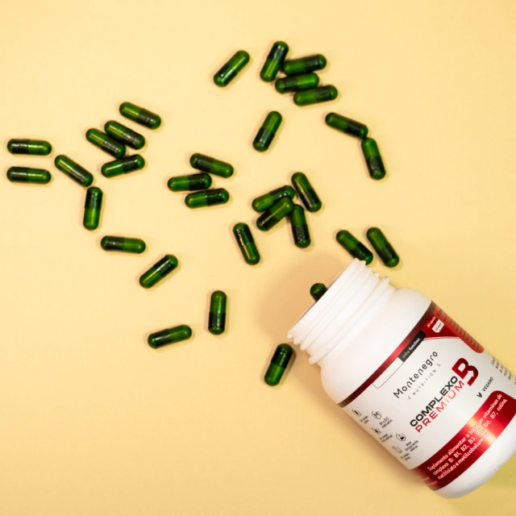
Complexo B
É um grupo de oito vitaminas hidrossolúveis essenciais que atuam no metabolismo energético, convertendo alimentos em energia, além de serem cruciais para a saúde do sistema nervoso, função cerebral e produção de células sanguíneas.